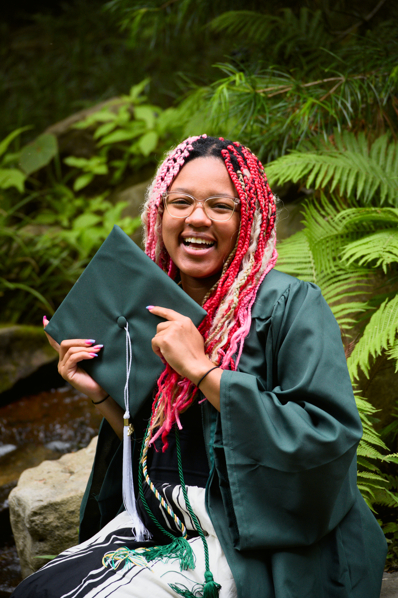
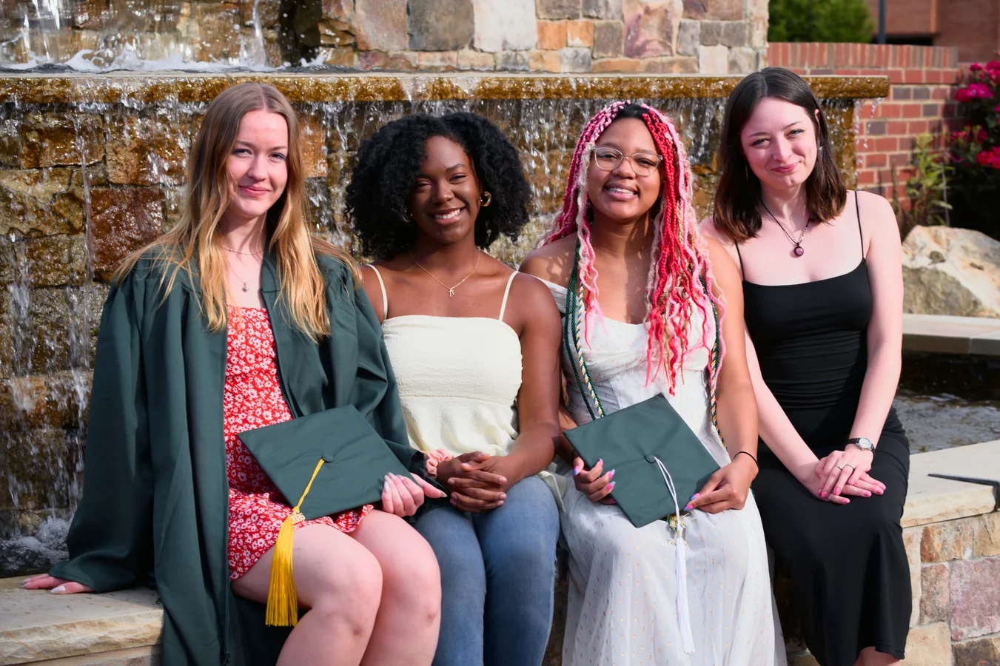

Graduation Portraits
Celebrate the achievement!
As a UNC Charlotte student, I know how busy things can get leading up to graduation. Sessions can be planned on or near campus for convenience, or at other meaningful locations throughout Charlotte and the surrounding area.
Whether you want classic cap and gown portraits, photos with friends and family, or something more personal, we'll create a session that reflects your time here and gives you something worth looking back on.
UNCC Student • Charlotte-Based • Locally Owned Business

Choose Your Session
Choose the session that best fits the amount of time, variety, and coverage you're looking for.
Mini Session
$125
A quick, focused session perfect for capturing the graduation essentials.
- 30 min. Portrait Session
- One Graduate
- Any Campus or Charlotte Location
- 10+ Professionally Edited Photos
- Delivered via Digital Gallery
Most Popular
Standard Session
$200
More variety for a complete graduation portrait collection across multiple campus settings.
- 60–90 min. Portrait Session
- One Graduate
- Any Campus or Charlotte Location
- 20–25+ Professionally Edited Photos
- Delivered via Digital Gallery
Group Session
from $280
Celebrate together while still getting individual portraits of each graduate.
- 90 min. Group Session
- 2+ Graduates
- Any Campus or Charlotte Location
- 30–40+ Professionally Edited Photos
- Individual and Group Portraits
- Delivered via Digital Gallery

Before Your Session
Sessions can take place before or after your ceremony, on or near campus, or at another location around Charlotte. Mini sessions focus on classic cap and gown portraits, while Standard sessions allow for a second outfit or a different look.
During Your Session
No posing experience needed. I'll guide you through a mix of classic portraits, natural movement, and campus landmarks. Family and friends are welcome to join for a few photos. Group bookings include individual portraits of each graduate as well as photos together.
After Your Session
Your photos will be edited for natural color, flattering light, and a polished finish, then delivered digitally within 2 to 3 days. Your download link will remain available for 60 days.

Ready to Celebrate?
Tell me which session you're interested in and when you're looking to shoot.
Book Your Graduation Session